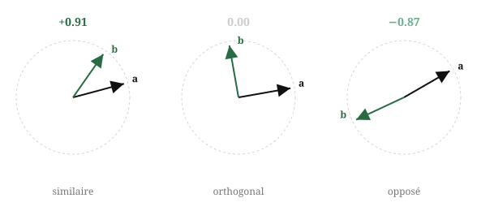
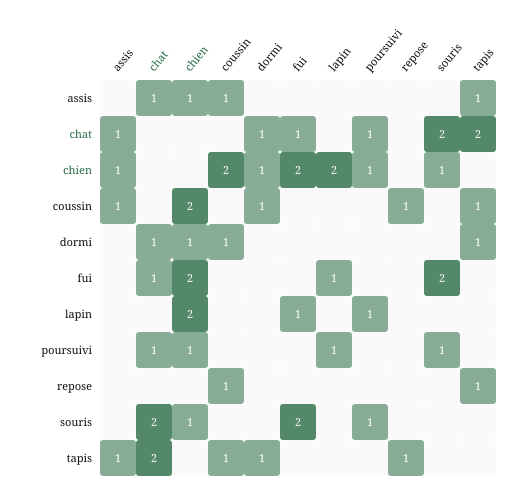
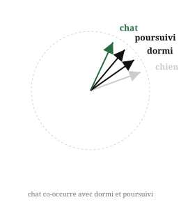
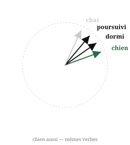
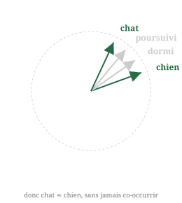

Pour apprendre les langues aux machines1, on peut représenter les mots comme des objets que les ordinateurs savent bien manipuler : des nombres.
Si l'on pouvait associer chaque mot à un nombre (par exemple chat $\Leftrightarrow$ 7,5), ou à une liste de nombres (un vecteur : chat $\Leftrightarrow$ [1,2 −3,5]), on pourrait alors calculer avec des mots : mesurer des distances entre deux mots, faire la moyenne de deux mots, ou bien sûr développer des modèles statistiques pour prédire le prochain mot, comme le font les LLM. Toute l'algèbre linéaire et les statistiques deviendraient applicables au langage.
Pour que cela fonctionne bien, il faudrait que deux mots dont le sens est similaire (par exemple, « chien » et « chat ») devraient être représentés par des vecteurs similaires.
Comment mesurer la ressemblance de deux vecteurs ?
On peut utiliser la similarité cosinus ou le produit scalaire entre deux vecteurs. Pour deux vecteurs $\mathbf{a}$ et $\mathbf{b}$, leur produit scalaire vaut $\mathbf{a} \cdot \mathbf{b} = \cos(\theta) \; \|\mathbf{a}\| \; \|\mathbf{b}\|$ où $\theta$ est l'angle entre eux, $\|\mathbf{a}\|$ et $\|\mathbf{b}\|$ la longueur de chaque vecteur, et la similarité cosinus est simplement $\cos(\theta)$.

Si deux vecteurs ont la même direction, leur similarité cosinus sera de 1 ; s'ils ont une direction opposée, −1 ; et s'ils sont orthogonaux (perpendiculaires), 0.
Si les vecteurs sont bien choisis pour qu'ils représentent le sens des mots, le produit scalaire devient un test de synonymie : deux mots qui ont le même sens auront des vecteurs associés qui ont un produit scalaire élevé.
Comment choisir ces vecteurs ?
Les mots « chat » et « chien », qui ont un sens proche (plus que « chat » et « anticonstitutionnel » ou « chat » et « marteler », du moins), apparaissent souvent dans les mêmes contextes : dans les livres, on trouvera souvent que tous deux ont dormi, tous deux ont poursuivi, tous deux sont assis, et ainsi de suite. Ici, avoir un sens proche et apparaître dans les mêmes contextes vont de pair : on peut faire l'hypothèse que c'est toujours le cas2.
You shall know a word by the company it keeps. — J.R. Firth, 1957
Dans ce cas, on peut choisir les vecteurs tels que des mots qui partagent les mêmes contextes obtiendront des vecteurs similaires.
Les mots qui apparaissent dans le même contexte3 sont les suivants :
ici, les deux mots précédant ou suivant le mot que l'on étudie, une fois les mots de liaison comme "le" ou "un" enlevés.

Matrice de co-occurrence (fenêtre = 2), mots de contenu uniquement. L'intensité du vert est proportionnelle au comptage.
On voit que « chat » apparaît souvent au même endroit (« co-occurre ») que « dormi », « poursuivi » et « assis ». On souhaite donc que le vecteur de « chat » soit proche des vecteurs de « dormi », « poursuivi » et « assis ».
De même, « chien » co-occurre avec dormi, poursuivi, et assis. On souhaite donc que le vecteur de « chien » soit proche des vecteurs de « dormi », « poursuivi » et « assis ».


Comme les vecteurs de « chien » et de « chat » sont tous les deux proches des vecteurs de « dormi », « poursuivi » et « assis », ils seront aussi proches l'un de l'autre, alors qu'ils ne co-occurent jamais dans les phrases de notre corpus.

Formellement, l'algorithme Word2Vec fonctionne de la manière suivante. On fait glisser une fenêtre de taille 2 sur chaque phrase. Le mot central est la cible, les mots voisins forment le contexte. On cherche à ce que le produit scalaire entre le vecteur du contexte et le vecteur de la cible soit le plus élevé (i.e. les deux vecteurs soient les plus proches), par rapport aux produits scalaires de la cible et de tous les autres mots du corpus :
En pratique, on commence par choisir un vecteur au hasard pour chacun des mots5. Puis, étant donné les valeurs actuelles de l'ensemble des vecteurs, on ajuste chacun d'entre eux pour augmenter la similarité entre les vecteurs qui co-occurent, et on recommence. Progressivement, à partir des valeurs aléatoires initiales, les vecteurs migrent pour se rapprocher de leurs contextes.
En réalité, on utilise des tokens : un découpage qui peut correspondre à un mot ou à une partie d'un mot.

Chaque flèche représente le vecteur d'un mot.
Après 2 000 étapes, la structure sémantique émerge. Tapis et coussin se regroupent. Chat et chien se regroupent.
mot 1
mot 2
similarité cosinus
chat
chien
+0.632
souris
lapin
+0.984
tapis
coussin
+0.998
poursuivi
fui
+0.961
dormi
assis
+0.866
chat
souris
+0.014
À aucun moment l'ordinateur n'a accès au sens des mots : uniquement à la position de chacun d'entre eux.
Ici, les vecteurs choisis n'avaient que deux dimensions : abscisse et ordonnée. Le corpus d'entraînement ne compte que 10 phrases. En pratique, les plongements lexicaux utilisent entre 50 et 300 dimensions et sont entraînés sur des corpus très larges, ce qui permet de capturer des relations sémantiques bien plus fines.
Pour obtenir des embeddings plus riches, il faut donc augmenter à la fois la dimensionnalité et la taille du corpus. Testons avec l'Odyssée : on entraîne Word2Vec en 50 dimensions sur son texte intégral traduit en français.
Voir le corpus (extrait)
L’Odyssée
Homère
A. Lemerre, Paris, 1893
HOMÈRE
ODYSSÉE
Traduction nouvelle
PAR
LECONTE DE LISLE
PARIS
ALPHONSE LEMERRE, ÉDITEUR
23-31, PASSAGE CHOISEUL, 27-31
* * *
M D CCC XCIII
RHAPSODIE I
D
is-moi, Muse, cet homme subtil qui erra si longtemps, après qu’il eut renversé la citadelle sacrée de Troiè. Et il vit les cités de peuples nombreux, et il connut leur esprit ; et, dans son cœur, il endura beaucoup de maux, sur la mer, pour sa propre vie et le retour de ses compagnons. Mais il ne les sauva point, contre son désir ; et ils périrent par leur impiété, les insensés ! ayant mangé les bœufs de Hèlios Hypérionade. Et ce dernier leur ravit l’heure du retour. Dis-moi une partie de ces choses, Déesse, fille de Zeus.
Tous ceux qui avaient évité la noire mort, échappés de la guerre et de la mer, étaient rentrés dans leurs demeures ; mais Odysseus restait seul, loin de son pays et de sa femme, et la vénérable Nymphe Kalypsô, la très-noble Déesse, le retenait dans ses grottes creuses, le désirant pour mari. Et quand le temps vint, après le déroulement des années, où les Dieux voulurent qu’il revît sa demeure en Ithakè, même alors il devait subir des combats au milieu des siens. Et tous les Dieux le prenaient en pitié, excepté Poseidaôn, qui était toujours irrité contre le divin Odysseus, jusqu’à ce qu’il fût rentré dans son pays.
Et Poseidaôn était allé chez les Aithiopiens qui habitent au loin et sont partagés en deux peuples, dont l’un regarde du côté de Hypériôn, au couchant, et l’autre au levant. Et le Dieu y était allé pour une hécatombe de taureaux et d’agneaux. Et comme il se réjouissait, assis à ce repas, les autres Dieux étaient réunis dans la demeure royale de Zeus Olympien. Et le Père des hommes et des Dieux commença de leur parler, se rappelant dans son cœur l’irréprochable Aigisthos que l’illustre Orestès Agamemnonide avait tué. Se souvenant de cela, il dit ces paroles aux Immortels :
– Ah ! combien les hommes accusent les Dieux ! Ils disent que leurs maux viennent de nous, et, seuls, ils aggravent leur destinée par leur démence. Maintenant, voici qu’Aigisthos, contre le destin, a épousé la femme de l’Atréide et a tué ce dernier, sachant quelle serait sa mort terrible ; car nous l’avions prévenu par Herméias, le vigilant tueur d’Argos, de ne point tuer Agamemnôn et de ne point désirer sa femme, de peur que l’Atréide Orestès se vengeât, ayant grandi et désirant revoir son pays. Herméias parla ainsi, mais son conseil salutaire n’a point persuadé l’esprit d’Aigisthos, et, maintenant, celui-ci a tout expié d’un coup.
Et Athènè, la Déesse aux yeux clairs, lui répondit :
– Ô notre Père, Kronide, le plus haut des Rois ! celui-ci du moins a été frappé d’une mort juste. Qu’il meure ainsi celui qui agira de même ! Mais mon cœur est déchiré au souvenir du brave Odysseus, le malheureux ! qui souffre depuis longtemps loin des siens, dans une île, au milieu de la mer, et où en est le centre. Et, dans cette île plantée d’arbres, habite une Déesse, la fille dangereuse d’Atlas, lui qui connaît les profondeurs de la mer, et qui porte les hautes colonnes dressées entre la terre et l’Ouranos. Et sa fille retient ce malheureux qui se lamente et qu’elle flatte toujours de molles et douces paroles, afin qu’il oublie Ithakè ; mais il désire revoir la fumée de son pays et souhaite de mourir. Et ton cœur n’est point touché, Olympien, par les sacrifices qu’Odysseus accomplissait pour toi auprès des nefs Argiennes, devant la grande Troiè. Zeus, pourquoi donc es-tu si irrité contre lui ?
Et Zeus qui amasse les nuées, lui répondant, parla ainsi :
– Mon enfant, quelle parole s’est échappée d’entre tes dents ? Comment pourrais-je oublier le divin Odysseus, qui, par l’intelligence, est au-dessus de tous les hommes, et qui offrait le plus de sacrifices aux Dieux qui vivent toujours et qui habitent le large Ouranos ? Mais Poseidaôn qui entoure la terre est constamment irrité à cause du Kyklôps qu’Odysseus a aveuglé, Polyphèmos tel qu’un Dieu, le plus fort des Kyklôpes. La Nymphe Thoôsa, fille de Phorkyn, maître de la mer sauvage, l’enfanta, s’étant unie à Poseidaôn dans ses grottes creuses. C’est pour cela que Poseidaôn qui secoue la terre, ne tuant point Odysseus, le contraint d’errer loin de son pays. Mais nous, qui sommes ici, assurons son retour ; et Poseidaôn oubliera sa colère, car il ne pourra rien, seul, contre tous les Dieux Immortels.
Et la Déesse Athènè aux yeux clairs lui répondit :
– Ô notre Père, Kronide, le plus haut des Rois ! s’il plaît aux Dieux heureux que le sage Odysseus retourne en sa demeure, envoyons le Messager Herméias, tueur d’Argos, dans l’île Ogygiè, afin qu’il avertisse la Nymphe à la belle chevelure que nous avons résolu le retour d’Odysseus à l’âme forte et patiente. Et moi j’irai à Ithakè, et j’exciterai son fils et lui inspirerai la force, ayant réuni l’agora des Akhaiens chevelus, de chasser tous les Prétendants qui égorgent ses brebis nombreuses et ses bœufs aux jambes torses et aux cornes recourbées. Et je l’enverrai à Spartè et dans la sablonneuse Pylos, afin qu’il s’informe du retour de son père bien-aimé, et qu’il soit très-honoré parmi les hommes.
Ayant ainsi parlé, elle attacha à ses pieds de belles sandales ambroisiennes, dorées, qui la portaient sur la mer et sur l’immense terre comme le souffle du vent. Et elle prit une forte lance, armée d’un airain aigu, lourde, grande et solide, avec laquelle elle dompte la foule des hommes héroïques contre qui, fille d’un père puissant, elle est irritée. Et, s’étant élancée du faite de l’Olympos, elle descendit au milieu du peuple d’Ithakè, dans le vestibule d’Odysseus, au seuil de la cour, avec la lance d’airain en main, et semblable à un étranger, au chef des Taphiens, à Mentès.
Et elle vit les Prétendants insolents qui jouaient aux jetons devant les portes, assis sur la peau des bœufs qu’ils avaient tués eux-mêmes. Et des hérauts et des serviteurs s’empressaient autour d’eux ; et les uns mêlaient l’eau et le vin dans les kratères ; et les autres lavaient les tables avec les éponges poreuses ; et, les ayant dressées, partageaient les viandes abondantes.
Et, le premier de tous, le divin Tèlémakhos vit Athènè. Et il était assis parmi les Prétendants, le cœur triste, voyant en esprit son brave père revenir soudain, chasser les Prétendants hors de ses demeures, ressaisir sa puissance et régir ses biens. Or, songeant à cela, assis parmi eux, il vit Athènè : et il alla dans le vestibule, indigné qu’un étranger restât longtemps debout à la porte. Et il s’approcha, lui prit la main droite, reçut la lance d’airain et dit ces paroles ailées :
– Salut, Étranger. Tu nous seras ami, et, après le repas, tu nous diras ce qu’il te faut.
Ayant ainsi parlé, il le conduisit, et Pallas Athènè le suivit. Et lorsqu’ils furent entrés dans la haute demeure, il appuya la lance contre une longue colonne, dans un arsenal luisant où étaient déjà rangées beaucoup d’autres lances d’Odysseus à l’âme ferme et patiente. Et il fit asseoir Athènè, ayant mis un beau tapis bien travaillé sur le thrône, et, sous ses pieds, un escabeau. Pour lui-même il plaça auprès d’elle un siège sculpté, loin des Prétendants, afin que l’étranger ne souffrît point du repas tumultueux, au milieu de convives injurieux, et afin de l’interroger sur son père absent.
Et une servante versa, pour les ablutions, de l’eau dans un bassin d’argent, d’une belle aiguière d’or ; et elle dressa auprès d’eux une table luisante. Puis, une intendante vénérable apporta du pain et couvrit la table de mets nombreux et réservés ; et un découpeur servit les plats de viandes diverses et leur offrit des coupes d’or ; et un héraut leur servait souvent du vin.
Et les Prétendants insolents entrèrent. Ils s’assirent en ordre sur des sièges et sur des thrônes ; et des hérauts versaient de l’eau sur leurs mains ; et les servantes entassaient le pain dans les corbeilles, et les jeunes hommes emplissaient de vin les kratère
[…]
Puisqu'il est difficile de représenter des vecteurs de dimension 50, on utilise un algorithme6 pour les représenter en 2D, d'une manière qui préserve autant que possible les distances entre les vecteurs.
Analyse en composantes principales.

Quelques exemples de similarité cosinus entre les mots
odysseus
divin 0.746
lui 0.739
subtil 0.717
patient 0.703
le 0.683
mer
écumeuse 0.683
nef 0.672
bord 0.625
noire 0.623
flots 0.614
dieux
immortels 0.734
plût 0.650
châtié 0.642
savent 0.625
heureux 0.618
L'une des propriétés intéressantes des plongements lexicaux est que l'on peut faire de l'arithmétique avec les mots, du moins avec leur représentation vectorielle. Si le sens des mots est bien représenté comme des directions dans l'espace, alors :